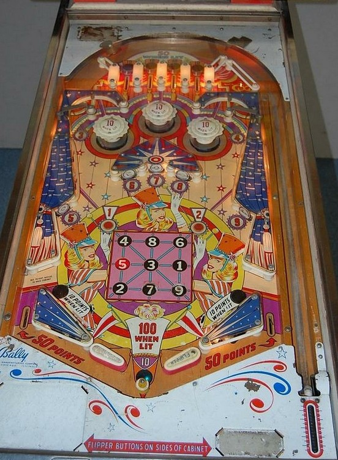

3-in-Line is the 4-player version. Bongo is the 2-player version with identical rules and scoring.
Top lanes score 10 points or 50 when lit. Only one of the four is lit at a time, and they rotate based on 1-point switch hits.
The main goal of 3-in-Line/Bongo is to collect all of the numbers 1 through 9. 3 and 4 are earned at rollunder gates in the top left and top right of the game; 5-6-7-8-9 are standup targets across the middle of the game; 1 and 2 are rollover buttons near the center 3x3 grid. Any switch that corresponds to a number scores 10 points whether it's lit or not. Hitting a numbered button or target when it is lit unlights that number on the playfield and lights that number on the 3x3 grid. Making any line in the 3x3 grid lights the out hole to score 100 points instead of 10 when you drain. Completing the 3x3 grid awards a Special, which appears to be worth 1 or 2 free games, then resets the grid. Progress on the grid is reset at the start of each ball.
The three pop bumpers and two slingshots score 1 point or 10 when lit. Like many other Bally games from the mid-1960s, these features are lit pseudorandomly based on a dynamic difficulty system which causes features to be lit less frequently if the game has recently given out many free games.
Out lanes score 50 points. Landing in the out hole, no matter how the ball drains, scores 10 points, or 100 if any three-in-a-row was completed on that ball. There is no extra ball feature. The Specials earned from completing a 3x3 grid may be able to be set to score 100 points each, but I have not confirmed this. Tilt ends game, but only for the player who tilted. There is no center post, kickback, or gate feature at the bottom of the table.
The below picture of 3-in-Line's playfield was taken from Pinside, where it is listed as image #3650023.
